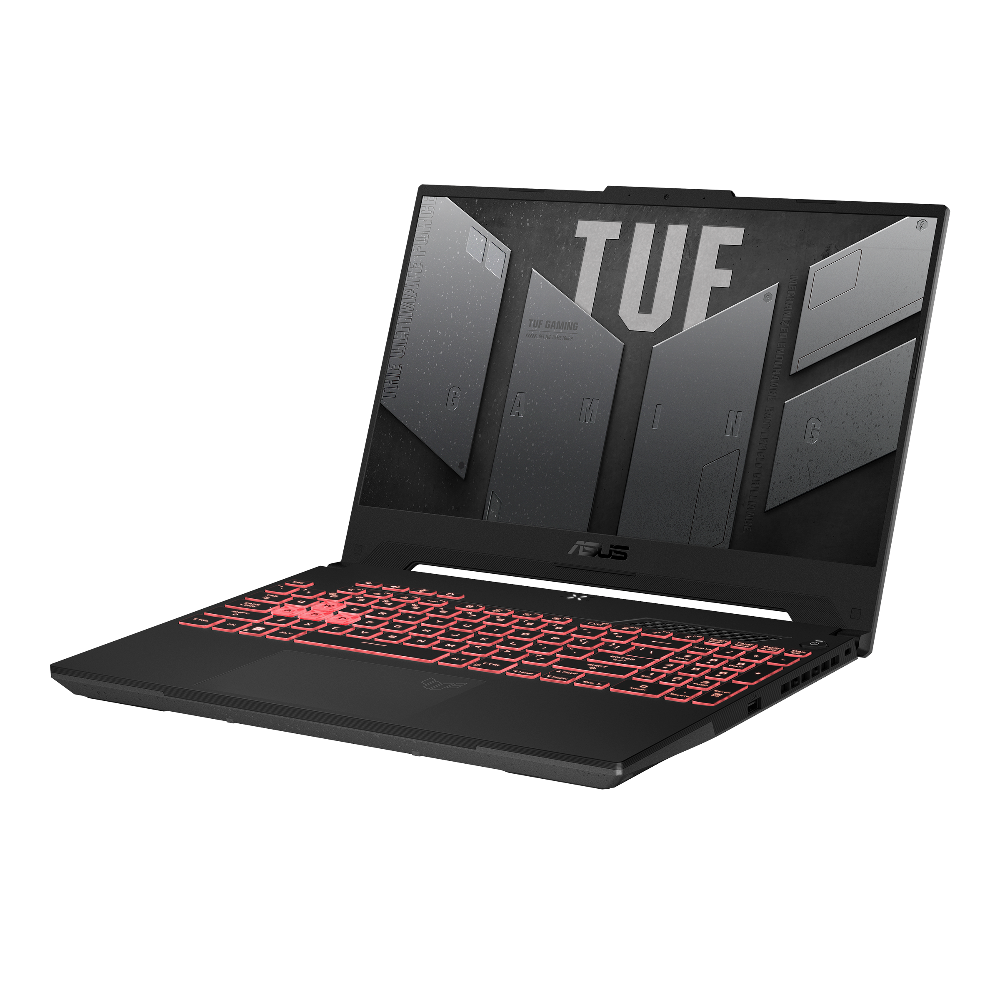

ASUS
TUF GAMING
RULE THE GAMING WORLD
The ASUS TUF F15 gaming laptop stands out as a powerhouse in the world of portable gaming, combining robust performance with military-grade durability. Equipped with the latest Intel Core i7 processor and NVIDIA GeForce RTX 3060 graphics, it delivers exceptional speed and stunning visuals, perfect for intense gaming sessions and demanding creative tasks. Its high-refresh-rate display ensures smooth gameplay, while the comprehensive cooling system keeps the device running at optimal temperatures. With a rugged design built to withstand the rigors of daily use, the TUF F15 is not just a gaming machine but a reliable companion for gamers and professionals alike.
₹69,999*
